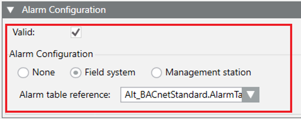

Field System Alarms
Field system alarms can be configured only for simple properties, no array, of the following GMS and PVSS types:
- GMSBOOL
- GMSREAL
- GMSENUM
- GMSINT (only if based on INT data type)
- GMSUINT (only if based on UINT data type)
- GMSINT64
- GMSUIN64
- BOOL
- FLOAT
- INT
- UINT
- LONG
- ULONG
To define field system alarms, the following can be specified:
Data | Use | Description |
Type | Mandatory | FIELDSYSTEM |
TableReference | Mandatory | Name of the event table. NOTE 1: In case of empty string (“TableReference”: “”), the default value is assumed. NOTE 2: The name specified here must correspond to the name of a data point of type “GmsAlarmTable_Driver” already present in the project. If the specified name does not correspond to a data point in the project, the default (empty string: “”) value is assumed. NOTE 3: The name specified here can or cannot have the suffix “.AlarmTable”. In the last case, the suffix will be automatically added. |
Example
"Alarms": {
"Valid": true,
"AlarmsConfiguration": {
"Type": "FIELDSYSTEM",
"TableReference": "Alt_BACnetStandard"
}
}
The following image shows the corresponding settings in the Models & Functions tab:
